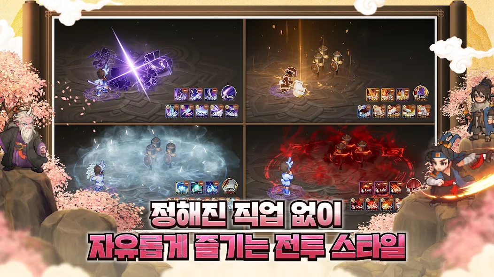
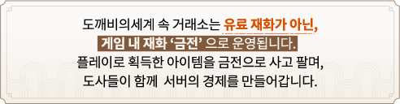

이 게임은 확률형 아이템을 포함하고 있습니다.
도깨비의세계 쇼케이스 이후 정식 출시, 도술 12스타일 한 줄 정리와 이벤트·쿠폰 총정리 (10월 14일 기준)
쇼케이스에서 공개되던 MMORPG 신작 도깨비의세계가 10월 8일(목) 11시에 정식 출시되고 일주일이 다 되어 가는데요, 그 사이 도술도 이벤트도 쿠폰도 쌓였더라고요. 공식 공지와 가이드를 바탕으로 도술, 이벤트, 쿠폰 순서로 정리했고, 직접 플레이한 후기는 아니에요. 공지에는 출시 당일 양대 마켓 인기 1위(이벤트 10676)에 이어 10월 13일 매출 1위(공지 17089) 소식도 올라왔어요.

공식 키아트에 담긴 야간 궁궐과 마을 전경
이미지 출처: 카카오게임즈 도깨비의세계 공식 페이지
도깨비의세계는 어떤 게임인가요?
도깨비의세계는 2D 도트 캐릭터와 3D 배경을 합친 2.5D 그래픽의 MMORPG이고, 정해진 직업 없이 도술 조합으로 전투 스타일을 짜요.

도트 캐릭터와 입체 배경이 겹쳐 보이는 인게임 화면
이미지 출처: Google Play 도깨비의세계
하단 도술 슬롯 5개에 같은 스타일 도술을 3개 이상 걸면 궁극기가 자동으로 등록되고, 신식 개방 화면에서 궁극기 정보를 볼 수 있거든요. 의복과 탈것은 능력치 없이 외형만 바꾸는 요소예요.
도술은 몇 종류이고 스타일마다 어떻게 다른가요?
도술 스타일은 근거리 4종, 원거리 3종, 유틸/제어 5종으로 모두 12가지예요. 직업이 아니라 도술을 묶는 이름이라서, 슬롯 5개 중 같은 스타일 도술이 3개 이상이면 그 스타일의 궁극기가 열려요.
같은 스타일 3개를 걸면 궁극기가 채워지는 슬롯 화면

직업 없이 스타일을 바꿔 가며 싸우는 전투 4분할
이미지 출처: Google Play 도깨비의세계
| 스타일 | 한 줄 정리 | 궁극기 |
|---|---|---|
| 단검으로 파고들어 한 명을 연달아 찌르는 암살형 | 암습 | |
| 주먹과 편곤을 쉴 새 없이 휘둘러 피해를 쌓는 속공형 | 폭주 | |
| 망치와 대검을 모았다가 묵직하게 내려찍는 일격형 | 천벌 | |
| 먹 그림자가 따라붙는 발도 검술형 | 일필휘지 | |
| 활과 쇠뇌로 멀리서 겨누는 사격형 | 정조준 | |
| 부적과 저주로 범위를 잠식하며 이어 때리는 타입 | 신내림 | |
| 번개·얼음·화염으로 범위를 쓸어 담는 광역 마법형 | 대폭발 | |
| 방패로 버티고 밀쳐내는 방어 유틸 | 방패 낙하 | |
| 돌진과 순간이동으로 거리를 좁히는 이동기 중심 | 연속 쇄도 | |
| 피해를 주면서 아군에게 이로운 효과를 보태는 지원형 | 개전의 가호 | |
| 환영 단검으로 때리고 적의 이로운 효과를 걷어내는 제어형 | 회전하는 칼날 | |
| 사슬과 얼음 감옥으로 묶고 가두는 제어형 | 사슬 묶기 |
도술 스타일 자료 출처: 도깨비의세계 공식 커뮤니티 도깨비 서고
10월 14일 점검(업데이트 18403)에서 일부 스타일의 PvP·PvE 피해량이 올랐고, 10월 21일(수) 정기 점검에 도술 강화·돌파 내역이 초기화되고 쓴 재화는 소급 지급될 예정(공지 17815)이에요. 재화는 이 날짜 이후에 쓰시는 게 좋겠더라고요. 스타일별 용도 비교는 같은 블로그의 「도깨비의세계 도술 티어표 10월 11일 기준」 글에 있고, 10월 14일 상향 전 기준이에요.
지금 진행 중인 이벤트는 뭐가 있나요?
10월 14일 오전 공지 기준이고, 10월 15일 23:59에 끝나는 것은 묘롱 찾기와 흔적 찾기 두 개예요.
| 이벤트 | 기간 | 보상과 참여 |
|---|---|---|
| 초보 도사 성장 지원 | 10월 21일 08:00까지 | 일차별 미션 달성 시 엽전 25,000개 등, 누적 포인트로 비법서 교환 |
| 도깨비의세계 패스 | 10월 21일 08:00까지 | 일일 미션 포인트로 레벨 보상 |
| 훈민증표 수집 · OX 퀴즈 | 10월 21일 08:00까지 | 한글 무기 외형 교환, 퀴즈는 매일 19:30, 둘 다 레벨 50 필요 |
| 특별 출석 | 11월 4일 08:00까지 | 매일 접속 보상, 14일차 희귀 가호 선택 상자 |
| 단 봉인 해제 · 단련의 길 | 2027년 10월 6일 08:00까지 | 단 누적 10·30·50·80·120·180·250개 봉인 해제 단계마다 엽전 (귀속) 100,000개, 목표 전투력 달성 시 요혼석 |
| 전래동화 콩쥐 팥쥐 | 12월 10일 08:00까지 | 별의 조각을 미누에게서 도술 조각 선택 상자로 교환 |
| 도전! 문파 전투 | 별도 공지 시까지 | 콘텐츠 4곳을 1회씩 하면 도전의 도술 조각 선택 상자 최대 8개 |
| 정식 오픈 기념 몽련 특별 선물 | 10월 21일 08:00까지 | 접속하면 우편으로 희귀 장비 강화 비법서 200개, 요혼석 300개 등 |
| 낙화의 전장 요화선녀 서버 보상 | 10월 21일 정기 점검 전까지 | 요화선녀 처치 시 서버 기여도 순위에 따라 우편 지급 |
| 10월 14일 점검 보상 | 10월 14일 23:59 마감(종료) | 접속하면 우편으로 신기 가루 30개, 엽전 50,000개, 전투 공격 비법서 5개 |
아래는 인게임 밖 이벤트예요.
| 이벤트 | 기간 | 보상과 참여 |
|---|---|---|
| 치지직 · SOOP 드롭스 | 10월 28일 점검 전까지 | 시청 30·60·120분 가호 주머니, 보상 신청은 11월 7일까지 |
| 피카플레이 PC방 | 11월 1일 23:59까지 | 누적 5시간 플레이로 프로모션 상자 쿠폰, 출석 마일리지는 조기 소진 |
| 묘롱 찾기 | 10월 15일 23:59 마감 | 쇼케이스 비하인드 영상을 보고 묘롱 등장 횟수를 댓글로 남기기, 컬쳐랜드 상품권 추첨 |
| 흔적 찾기 | 10월 15일 23:59 마감 | GM 영상 속 장소 초성 퀴즈 댓글, 또는 이벤트 참여 게시판에 도깨비 인증 사진 올리기, 컬쳐랜드 상품권 추첨 |
해월의 응원 선물은 10월 12일 23:59에 끝났고, 커뮤니티 게시판 글 이벤트 3종은 상품권 추첨형이라 10월 21일 23:59까지예요.
쿠폰 코드는 몇 종이고 어디에 입력하나요?
10월 14일 오전 공지 기준 쓸 수 있는 쿠폰은 코드 9종이고, 게임 설정의 계정 탭에서 입력해요. 애플·구글 1위, 라이브 감사 3종, 매출 1위 쿠폰은 공지에 계정당 1회로 적혀 있어요(공지 9200·10503·12167·17089).
| 코드 | 구성 | 기한 |
|---|---|---|
| 도깨비1008 | 꿀떡 무기 외형 | 11월 5일 23:59 |
| 칭호나와라뚝딱 | 칭호 [타바로 소식통], 엽전 100,000개 | 11월 11일 23:59 |
| 애플1위풍악을울려라 | 염색약 선택 상자, 엽전 111,111개, 1위 기념 도술 조각 선택 상자 | 11월 11일 23:59 |
| 구글1위잔치로구나 | 애플 쿠폰과 같은 구성 | 11월 11일 23:59 |
| 매출1위감사합니다 | 의복 랜덤 열쇠, 단일 염색약 선택 상자 11개, 요혼석 1,111개, 엽전 1,111,111개 | 11월 11일 23:59 |
| 도깨비의다짐 | 가호 주머니 20개, 엽전 1,000,000개, 희귀 가호의 정수 100개 | 제한 없음 |
| 도깨비의약속 | 1위 도술 조각 선택 상자 3개, 도술 강화 요령서 선택 첩 10개, 요혼석 100개 | 제한 없음 |
| 도깨비의마음 | 요혼석 200개, 도전자의 희귀 장신구 선택 상자, 희귀 무기 선택 상자 | 제한 없음 |
| 도깨비의내일 | 산척의 방어구 도안 선택 상자, 기운 발현 재료 선택 상자 50개, 레이드 추가 티켓, 영기 수련 가속권 6개, 체력 회복 물약 100개 | 11월 11일 23:59 |

도깨비1008로 받는 꿀떡 무기 외형
이미지 출처: 도깨비의세계 공식 커뮤니티 공지
PC와 안드로이드는 설정 ▶ 계정 ▶ 쿠폰 등록에서 코드를 넣고, iOS는 쿠폰 사이트에서 회원 번호와 코드를 넣어요. 보상은 우편함으로 와요. 개별 발급 쿠폰은 표에서 뺐어요.
공략 팁, 뭐부터 챙기면 되나요?
마감이 가까운 이벤트부터 받고, 도술 조각 선택 상자는 도전! 문파 전투·1위 기념 쿠폰·전래동화 세 곳에서 모으는 순서가 좋아요. 도술 하나를 배울 때 조각이 100개 필요한데(가이드 7834), 문파 전투 상자는 상자당 조각 100개라 한 개가 도술 한 개 몫이에요.
거래소는 게임 내 재화 금전으로 돌아가고, 등록할 때 보증금이 들고 팔리면 수수료가 붙어요(가이드 7862). 10월 14일 업데이트(18403)부터 일반·희귀 장비는 한 번이라도 강화·각성하면 거래소에 못 올리고, 금전 1개당 엽전 교환비는 300개로 올랐어요.

이미지 출처: 도깨비의세계 공식 사전예약 페이지
자주 묻는 질문
Q. 도술 초기화는 어디까지 적용되나요?
공지 기준으로 강화와 돌파 내역이 대상이고, 도술 각성은 대상이 아니에요. 돌파 기능은 라이브 방송 시점부터 일시 제한돼 있고, 강화는 다음 정기 점검 전까지 그대로 쓸 수 있어요.
Q. 쿠폰 사이트에서 넣으면 보상은 어느 캐릭터가 받나요?
최초로 접속한 캐릭터나 지금 접속 중인 캐릭터의 우편함으로 갑니다.
Q. PC에서도 할 수 있나요?
공식 PC 클라이언트가 있고 설치는 Google Play Games를 거쳐요. 앱플레이어는 막혀 있습니다.
도깨비의세계 이벤트·쿠폰 정리
이벤트와 쿠폰은 공지로 수시로 바뀌니까 공식 쿠폰 종합 안내와 이벤트 한눈에 보기를 같이 열어 두세요. 10월 15일 23:59에 끝나는 묘롱 찾기와 흔적 찾기는 공식 공지에서 마감 시각을 한 번 더 확인해 보세요~ 공식 소식은 공식 홈과 공식 커뮤니티에서 볼 수 있어요.
✔ 도깨비의세계 같이 보기 좋은 내용
· 도깨비의세계 백선운 탈 것 얻는 법, PC방 안 가고 집 PC 크래프트박스로 누적 5시간 채우는 5단계
· 도깨비의세계 가호 세트 효과 정리, 토끼 연꽃 도깨비 나비 봉황 등급별 수치와 세트 점수 10·30·50·70
· 도깨비의세계 전래동화 꼭 해야 하는 이유, 별의 조각 얻는 법과 미누 상점 교환
참고한 곳 (2026.10.14 오전 공지 기준)
· 공지 13991: 쿠폰 종합 안내
· 업데이트 18403: 10월 14일 업데이트
· 공지 17815: 도술 초기화·돌파 일시 제한
· 가이드 7834: 도술 가이드
· 가이드 7862: 거래소 가이드